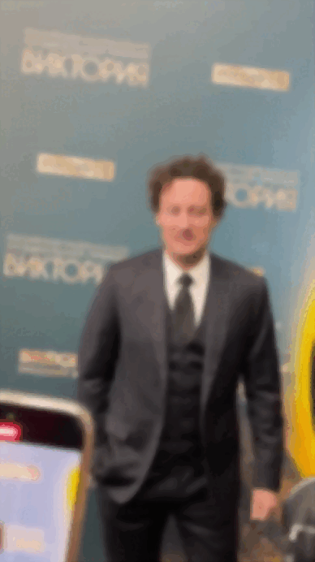
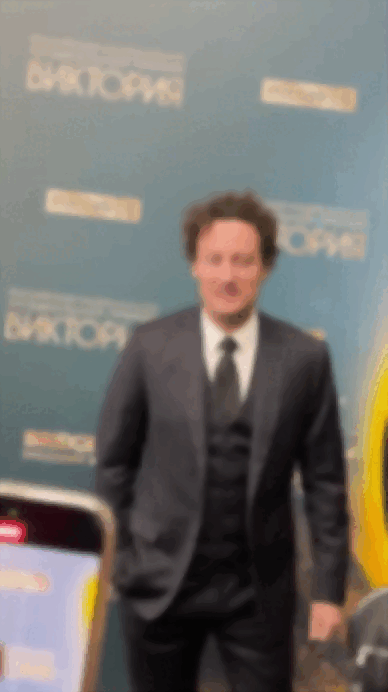
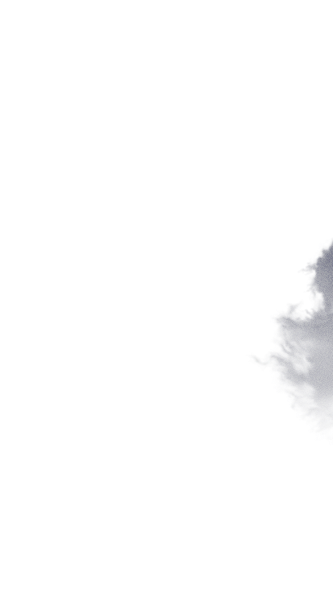
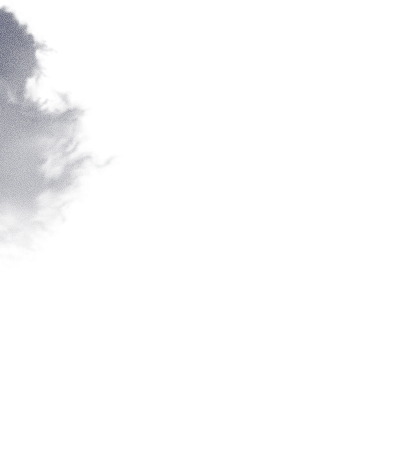
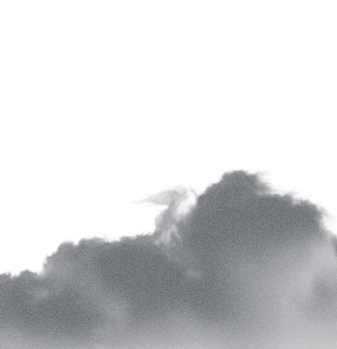
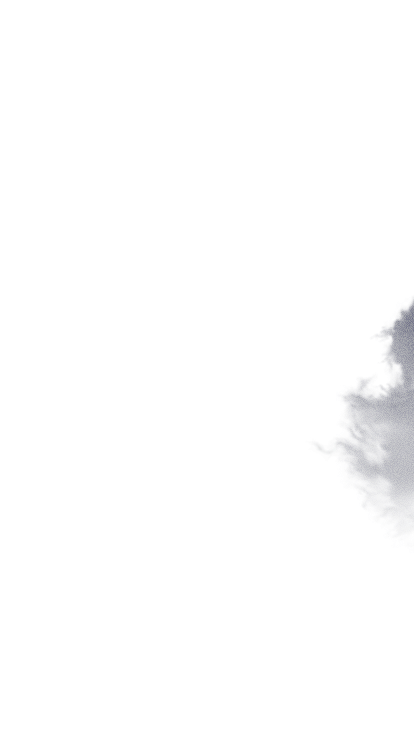
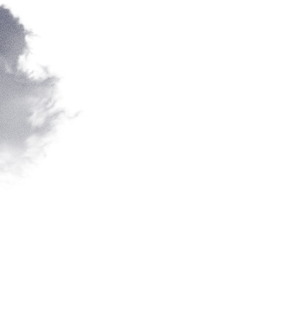
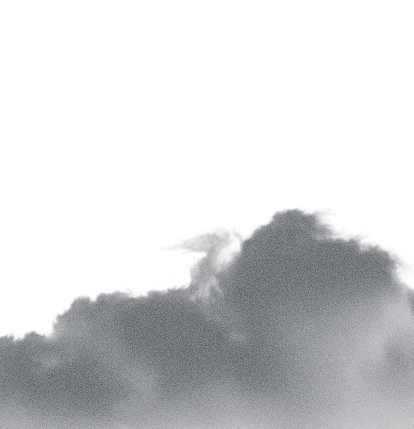

1. С кем вы уже работали?
От предпринимателей до
блогеров-миллионников и продакшнов.
Работал с брендами: Felinger, Humoair, Milli и др.
Также сотрудничал с дикторами, видеографами,
продюсерами, маркетологами и др.
2. Какие у вас технические навыки?
Снимаю на Sony и Fujifilm.
Понимаю основы
операторской и режиссёрской работы.
Пока
не работал на площадке, но изучаю процессы
и развиваюсь в этом направлении.
3. Есть ли у вас опыт в продвижении?
Да. Вёл TikTok (40тыс), группу ВК (30тыс),
продюсировал блогеров,
помогал с визуалом и
контент-стратегией.
Понимаю, как сделать не
только красиво, но и эффективно.
4. Вы всё делаете сами или с командой?
По задаче. Могу взять монтаж, моушн и съёмку на
себя.
Если проект больше — подключаю
проверенных ребят: операторов, 3D, дикторов.
Умею собирать команду и вести процесс как
продюсер.
Я — амбициозный и креативный человек, умеющий
подстраиваться под разные стили монтажа и визуала.
Обладаю операторскими, режиссёрскими и
дизайнерскими навыками, работаю с
моушн-дизайном, 3D и съёмкой.
Умею слушать задачу, видеть суть и предлагать
решение, а не просто «сделать красиво».
Работаю
чётко, сдаю в срок и держу качество.
Если вам нужен специалист, который не просто
выполняет задачу, а думает вместе с вами — пишите.
Буду рад поработать.
 



 




